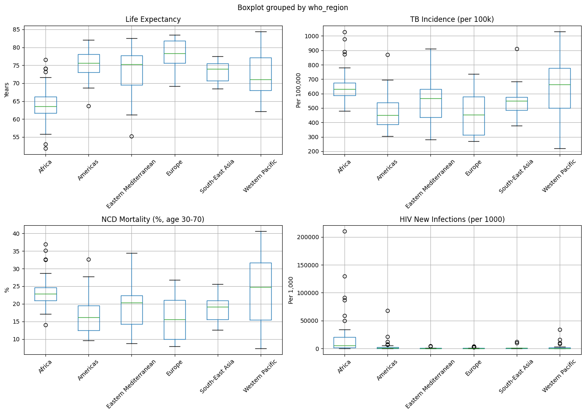
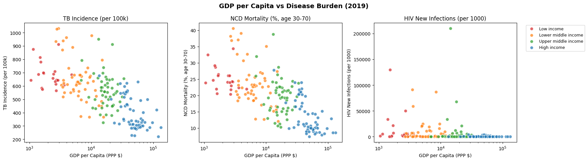
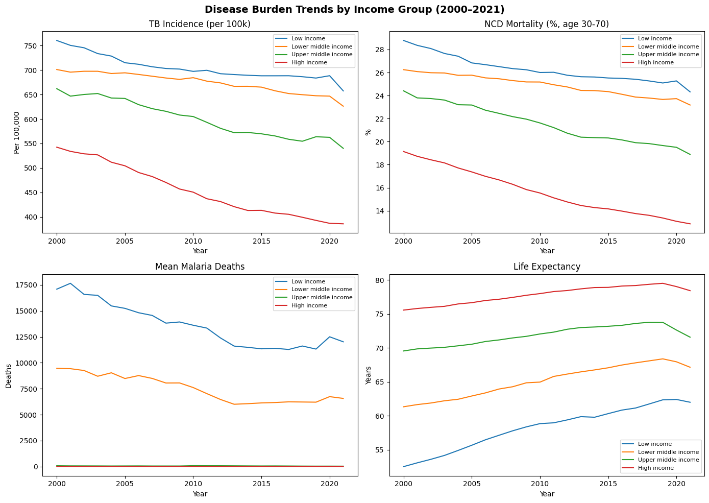
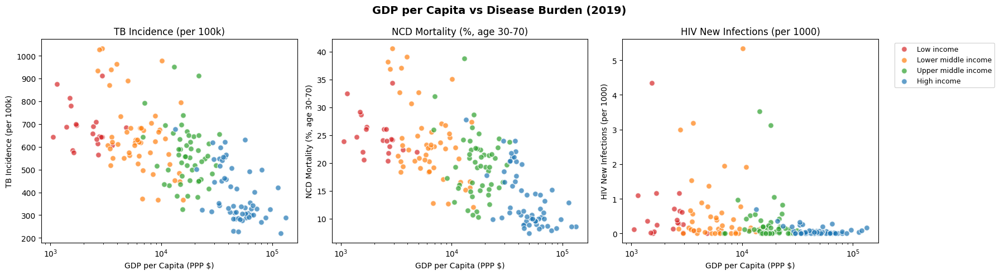
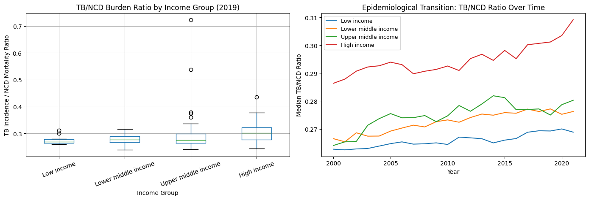
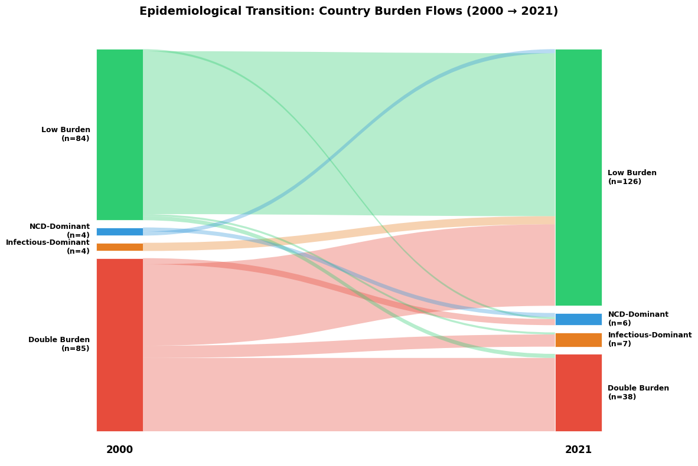
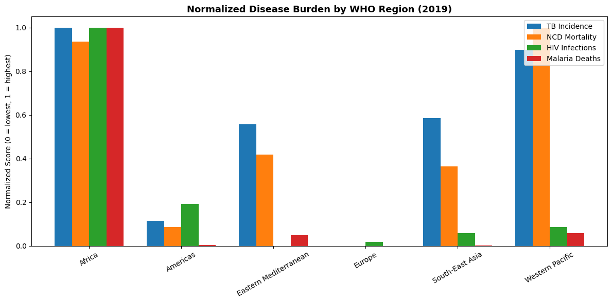

Code
import requests
import pandas as pd
import numpy as np
import timeWHO_BASE = "https://ghoapi.azureedge.net/api/"
def fetch_who_indicator(indicator_code, spatial_type="COUNTRY"):
"""Fetch all country-level data for a WHO GHO indicator."""
url = f"{WHO_BASE}{indicator_code}"
params = {"$filter": f"SpatialDimType eq '{spatial_type}'"}
all_records = []
while url:
resp = requests.get(url, params=params)
resp.raise_for_status()
data = resp.json()
all_records.extend(data.get("value", []))
url = data.get("@odata.nextLink", None)
params = {} # nextLink already has params
df = pd.DataFrame(all_records)
return dfNCD mortality: (12210, 25)| Id | IndicatorCode | SpatialDimType | SpatialDim | TimeDimType | ParentLocationCode | ParentLocation | Dim1Type | TimeDim | Dim1 | ... | DataSourceDim | Value | NumericValue | Low | High | Comments | Date | TimeDimensionValue | TimeDimensionBegin | TimeDimensionEnd | |
|---|---|---|---|---|---|---|---|---|---|---|---|---|---|---|---|---|---|---|---|---|---|
| 0 | 7284124 | NCDMORT3070 | COUNTRY | ECU | YEAR | AMR | Americas | SEX | 2001 | SEX_FMLE | ... | None | 14.2 [11.3-16.9] | 14.2 | 11.3 | 16.9 | None | 2024-12-18T14:54:42.07+01:00 | 2001 | 2001-01-01T00:00:00+01:00 | 2001-12-31T00:00:00+01:00 |
| 1 | 7284181 | NCDMORT3070 | COUNTRY | BWA | YEAR | AFR | Africa | SEX | 2005 | SEX_FMLE | ... | None | 12.5 [6.3-22.1] | 12.5 | 6.3 | 22.1 | None | 2024-12-18T14:54:42.07+01:00 | 2005 | 2005-01-01T00:00:00+01:00 | 2005-12-31T00:00:00+01:00 |
| 2 | 7285026 | NCDMORT3070 | COUNTRY | JAM | YEAR | AMR | Americas | SEX | 2012 | SEX_MLE | ... | None | 16.0 [13.2-18.6] | 16.0 | 13.2 | 18.6 | None | 2024-12-18T14:54:42.07+01:00 | 2012 | 2012-01-01T00:00:00+01:00 | 2012-12-31T00:00:00+01:00 |
3 rows × 25 columns
indicators = {
"WHOSIS_000001": "life_expectancy",
"WHS2_131": "tb_incidence",
"MALARIA_EST_DEATHS": "malaria_deaths",
"HIV_0000000026": "hiv_new_infections",
"NCDMORT3070": "ncd_mortality_30_70"
}
who_dfs = {}
for code, name in indicators.items():
if code == "NCDMORT3070":
who_dfs[name] = df_ncd_mort
continue
print(f"Fetching {name} ({code})...")
who_dfs[name] = fetch_who_indicator(code)
print(f" → {who_dfs[name].shape}")
time.sleep(1)
print("\nAll WHO indicators fetched.")Fetching life_expectancy (WHOSIS_000001)...
→ (12210, 25)
Fetching tb_incidence (WHS2_131)...
→ (12210, 25)
Fetching malaria_deaths (MALARIA_EST_DEATHS)...
→ (2723, 25)
Fetching hiv_new_infections (HIV_0000000026)...
→ (4850, 25)
All WHO indicators fetched.
--- life_expectancy ---
Years: [2000, 2001, 2002, 2003, 2004, 2005, 2006, 2007, 2008, 2009, 2010, 2011, 2012, 2013, 2014, 2015, 2016, 2017, 2018, 2019, 2020, 2021]
Dim1 values: ['SEX_FMLE' 'SEX_BTSX' 'SEX_MLE']
Countries: 185
--- tb_incidence ---
Years: [2000, 2001, 2002, 2003, 2004, 2005, 2006, 2007, 2008, 2009, 2010, 2011, 2012, 2013, 2014, 2015, 2016, 2017, 2018, 2019, 2020, 2021]
Dim1 values: ['SEX_MLE' 'SEX_BTSX' 'SEX_FMLE']
Countries: 185
--- malaria_deaths ---
Years: [2000, 2001, 2002, 2003, 2004, 2005, 2006, 2007, 2008, 2009, 2010, 2011, 2012, 2013, 2014, 2015, 2016, 2017, 2018, 2019, 2020, 2021, 2022, 2023, 2024]
Dim1 values: []
Countries: 110
--- hiv_new_infections ---
Years: [2000, 2001, 2002, 2003, 2004, 2005, 2006, 2007, 2008, 2009, 2010, 2011, 2012, 2013, 2014, 2015, 2016, 2017, 2018, 2019, 2020, 2021, 2022, 2023, 2024]
Dim1 values: []
Countries: 194
--- ncd_mortality_30_70 ---
Years: [2000, 2001, 2002, 2003, 2004, 2005, 2006, 2007, 2008, 2009, 2010, 2011, 2012, 2013, 2014, 2015, 2016, 2017, 2018, 2019, 2020, 2021]
Dim1 values: ['SEX_FMLE' 'SEX_MLE' 'SEX_BTSX']
Countries: 185def clean_who(df, value_col_name, has_sex=True):
"""Filter to both sexes, keep country/year/value."""
d = df.copy()
if has_sex and "Dim1" in d.columns:
d = d[d["Dim1"] == "SEX_BTSX"]
d = d[["SpatialDim", "ParentLocationCode", "ParentLocation", "TimeDim", "NumericValue"]].copy()
d = d.rename(columns={
"SpatialDim": "country_code",
"ParentLocationCode": "who_region_code",
"ParentLocation": "who_region",
"TimeDim": "year",
"NumericValue": value_col_name
})
d["year"] = d["year"].astype(int)
return d
df_life = clean_who(who_dfs["life_expectancy"], "life_expectancy")
df_tb = clean_who(who_dfs["tb_incidence"], "tb_incidence_per100k")
df_mal = clean_who(who_dfs["malaria_deaths"], "malaria_deaths", has_sex=False)
df_hiv = clean_who(who_dfs["hiv_new_infections"], "hiv_new_infections_per1000", has_sex=False)
df_ncd = clean_who(who_dfs["ncd_mortality_30_70"], "ncd_mortality_pct")
who_merged = df_life.merge(df_tb, on=["country_code", "who_region_code", "who_region", "year"], how="outer")
who_merged = who_merged.merge(df_mal, on=["country_code", "who_region_code", "who_region", "year"], how="outer")
who_merged = who_merged.merge(df_hiv, on=["country_code", "who_region_code", "who_region", "year"], how="outer")
who_merged = who_merged.merge(df_ncd, on=["country_code", "who_region_code", "who_region", "year"], how="outer")
print(f"WHO merged: {who_merged.shape}")
print(f"Countries: {who_merged['country_code'].nunique()}")
print(f"Years: {who_merged['year'].min()} - {who_merged['year'].max()}")
print(f"\nMissing values:\n{who_merged.isnull().sum()}")
who_merged.head(3)WHO merged: (4941, 9)
Countries: 198
Years: 2000 - 2024
Missing values:
country_code 0
who_region_code 0
who_region 0
year 0
life_expectancy 871
tb_incidence_per100k 871
malaria_deaths 2218
hiv_new_infections_per1000 1427
ncd_mortality_pct 871
dtype: int64| country_code | who_region_code | who_region | year | life_expectancy | tb_incidence_per100k | malaria_deaths | hiv_new_infections_per1000 | ncd_mortality_pct | |
|---|---|---|---|---|---|---|---|---|---|
| 0 | AFG | EMR | Eastern Mediterranean | 2000 | 53.823326 | 1120.545410 | 965.0 | 500.0 | 43.2 |
| 1 | AFG | EMR | Eastern Mediterranean | 2001 | 53.910188 | 1130.776611 | 965.0 | 500.0 | 43.5 |
| 2 | AFG | EMR | Eastern Mediterranean | 2002 | 55.154478 | 1118.808350 | 1133.0 | 500.0 | 43.1 |
WB_BASE = "https://api.worldbank.org/v2/country/all/indicator/"
def fetch_wb_indicator(indicator_code, start_year=2000, end_year=2024):
"""Fetch World Bank indicator for all countries."""
all_records = []
page = 1
while True:
params = {
"format": "json",
"date": f"{start_year}:{end_year}",
"per_page": 1000,
"page": page
}
resp = requests.get(f"{WB_BASE}{indicator_code}", params=params)
resp.raise_for_status()
data = resp.json()
if len(data) < 2 or not data[1]:
break
all_records.extend(data[1])
total_pages = data[0]["pages"]
if page >= total_pages:
break
page += 1
rows = []
for r in all_records:
if r["value"] is not None:
rows.append({
"country_code": r["countryiso3code"],
"country_name": r["country"]["value"],
"year": int(r["date"]),
"value": float(r["value"])
})
return pd.DataFrame(rows)
wb_indicators = {
"NY.GDP.PCAP.PP.KD": "gdp_per_capita_ppp",
"SH.XPD.CHEX.GD.ZS": "health_expenditure_pct_gdp",
"SP.URB.TOTL.IN.ZS": "urban_population_pct",
"SP.POP.TOTL": "population"
}
wb_dfs = {}
for code, name in wb_indicators.items():
print(f"Fetching {name} ({code})...")
wb_dfs[name] = fetch_wb_indicator(code)
print(f" → {wb_dfs[name].shape}")
time.sleep(0.5)
print("\nAll World Bank indicators fetched.")Fetching gdp_per_capita_ppp (NY.GDP.PCAP.PP.KD)...
→ (6109, 4)
Fetching health_expenditure_pct_gdp (SH.XPD.CHEX.GD.ZS)...
→ (5716, 4)
Fetching urban_population_pct (SP.URB.TOTL.IN.ZS)...
→ (6625, 4)
Fetching population (SP.POP.TOTL)...
→ (6625, 4)
All World Bank indicators fetched.wb_merged = None
for code, name in wb_indicators.items():
df = wb_dfs[name].rename(columns={"value": name})
if wb_merged is None:
wb_merged = df
else:
wb_merged = wb_merged.merge(df[["country_code", "year", name]],
on=["country_code", "year"], how="outer")
print(f"WB merged: {wb_merged.shape}")
print(f"Countries: {wb_merged['country_code'].nunique()}")
print(f"\nMissing values:\n{wb_merged.isnull().sum()}")
wb_merged.head(3)WB merged: (12733, 7)
Countries: 262
Missing values:
country_code 0
country_name 516
year 0
gdp_per_capita_ppp 516
health_expenditure_pct_gdp 969
urban_population_pct 0
population 0
dtype: int64| country_code | country_name | year | gdp_per_capita_ppp | health_expenditure_pct_gdp | urban_population_pct | population | |
|---|---|---|---|---|---|---|---|
| 0 | High income | 2000 | 41052.550749 | 9.350135 | 76.124359 | 1.255696e+09 | |
| 1 | High income | 2000 | 41052.550749 | 9.350135 | 76.124359 | 3.226682e+08 | |
| 2 | High income | 2000 | 41052.550749 | 9.350135 | 76.124359 | 2.126560e+09 |
who_countries = who_merged["country_code"].unique()
print(f"WHO countries: {len(who_countries)}")
wb_clean = wb_merged[wb_merged["country_code"].isin(who_countries)].copy()
wb_clean = wb_clean.drop_duplicates(subset=["country_code", "year"])
print(f"WB after filtering to WHO countries: {wb_clean.shape}")
print(f"Countries: {wb_clean['country_code'].nunique()}")
wb_clean.head(3)WHO countries: 198
WB after filtering to WHO countries: (4850, 7)
Countries: 194| country_code | country_name | year | gdp_per_capita_ppp | health_expenditure_pct_gdp | urban_population_pct | population | |
|---|---|---|---|---|---|---|---|
| 6258 | AFG | Afghanistan | 2000 | 1617.826475 | NaN | 18.558200 | 20130327.0 |
| 6259 | AFG | Afghanistan | 2001 | 1454.110782 | NaN | 18.741238 | 20284307.0 |
| 6260 | AFG | Afghanistan | 2002 | 1774.308743 | 9.443391 | 18.941248 | 21378117.0 |
Final merged: (4941, 14)
Countries: 198
Years: 2000 - 2024
Missing values:
country_code 0
who_region_code 0
who_region 0
year 0
life_expectancy 871
tb_incidence_per100k 871
malaria_deaths 2218
hiv_new_infections_per1000 1427
ncd_mortality_pct 871
country_name 294
gdp_per_capita_ppp 294
health_expenditure_pct_gdp 392
urban_population_pct 97
population 97
dtype: int64| country_code | who_region_code | who_region | year | life_expectancy | tb_incidence_per100k | malaria_deaths | hiv_new_infections_per1000 | ncd_mortality_pct | country_name | gdp_per_capita_ppp | health_expenditure_pct_gdp | urban_population_pct | population | |
|---|---|---|---|---|---|---|---|---|---|---|---|---|---|---|
| 0 | AFG | EMR | Eastern Mediterranean | 2000 | 53.823326 | 1120.545410 | 965.0 | 500.0 | 43.2 | Afghanistan | 1617.826475 | NaN | 18.558200 | 20130327.0 |
| 1 | AFG | EMR | Eastern Mediterranean | 2001 | 53.910188 | 1130.776611 | 965.0 | 500.0 | 43.5 | Afghanistan | 1454.110782 | NaN | 18.741238 | 20284307.0 |
| 2 | AFG | EMR | Eastern Mediterranean | 2002 | 55.154478 | 1118.808350 | 1133.0 | 500.0 | 43.1 | Afghanistan | 1774.308743 | 9.443391 | 18.941248 | 21378117.0 |
dict_keys(['id', 'iso2Code', 'name', 'region', 'adminregion', 'incomeLevel', 'lendingType', 'capitalCity', 'longitude', 'latitude'])
{'id': 'ABW', 'iso2Code': 'AW', 'name': 'Aruba', 'region': {'id': 'LCN', 'iso2code': 'ZJ', 'value': 'Latin America & Caribbean '}, 'adminregion': {'id': '', 'iso2code': '', 'value': ''}, 'incomeLevel': {'id': 'HIC', 'iso2code': 'XD', 'value': 'High income'}, 'lendingType': {'id': 'LNX', 'iso2code': 'XX', 'value': 'Not classified'}, 'capitalCity': 'Oranjestad', 'longitude': '-70.0167', 'latitude': '12.5167'}income_map = {}
name_map = {}
for c in wb_meta:
code = c["id"]
if code and c["incomeLevel"]["id"] != "NA":
income_map[code] = c["incomeLevel"]["value"]
name_map[code] = c["name"]
df["income_group"] = df["country_code"].map(income_map)
df["country_name"] = df["country_name"].fillna(df["country_code"].map(name_map))
print(f"Income group coverage: {df['income_group'].notna().sum()} / {len(df)}")
print(f"\nIncome group distribution:\n{df.drop_duplicates('country_code')['income_group'].value_counts()}")Income group coverage: 4844 / 4941
Income group distribution:
income_group
High income 64
Upper middle income 53
Lower middle income 50
Low income 25
Not classified 2
Name: count, dtype: int64Saved: (4941, 15)
Columns: ['country_code', 'who_region_code', 'who_region', 'year', 'life_expectancy', 'tb_incidence_per100k', 'malaria_deaths', 'hiv_new_infections_per1000', 'ncd_mortality_pct', 'country_name', 'gdp_per_capita_ppp', 'health_expenditure_pct_gdp', 'urban_population_pct', 'population', 'income_group']df = df[df["year"] <= 2021].copy()
df = df[df["income_group"] != "Not classified"].dropna(subset=["income_group"])
print(f"After filtering: {df.shape}")
print(f"Countries: {df['country_code'].nunique()}")
print(f"Years: {df['year'].min()} - {df['year'].max()}")
print(f"\nMissing values:\n{df.isnull().sum()}")
print(f"\nMissing % per column:")
print((df.isnull().sum() / len(df) * 100).round(1))After filtering: (4224, 15)
Countries: 192
Years: 2000 - 2021
Missing values:
country_code 0
who_region_code 0
who_region 0
year 0
life_expectancy 198
tb_incidence_per100k 198
malaria_deaths 1913
hiv_new_infections_per1000 1170
ncd_mortality_pct 198
country_name 0
gdp_per_capita_ppp 145
health_expenditure_pct_gdp 103
urban_population_pct 0
population 0
income_group 0
dtype: int64
Missing % per column:
country_code 0.0
who_region_code 0.0
who_region 0.0
year 0.0
life_expectancy 4.7
tb_incidence_per100k 4.7
malaria_deaths 45.3
hiv_new_infections_per1000 27.7
ncd_mortality_pct 4.7
country_name 0.0
gdp_per_capita_ppp 3.4
health_expenditure_pct_gdp 2.4
urban_population_pct 0.0
population 0.0
income_group 0.0
dtype: float64# Malaria deaths = 0 for non-endemic countries (missing = no malaria)
df["malaria_deaths"] = df["malaria_deaths"].fillna(0)
# HIV: missing likely means very low burden, but let's check which countries
hiv_missing = df[df["hiv_new_infections_per1000"].isna()]["country_code"].unique()
print(f"Countries missing HIV data: {len(hiv_missing)}")
print(f"Examples: {list(hiv_missing[:10])}")
# For other indicators, check which years are missing
for col in ["life_expectancy", "tb_incidence_per100k", "ncd_mortality_pct",
"gdp_per_capita_ppp", "health_expenditure_pct_gdp"]:
missing_years = df[df[col].isna()]["year"].value_counts().sort_index()
print(f"\n{col} — missing by year (top 5):")
print(missing_years.tail(5))Countries missing HIV data: 54
Examples: ['AND', 'ATG', 'AUT', 'BIH', 'BLR', 'BRN', 'CHN', 'CYP', 'CZE', 'DEU']
life_expectancy — missing by year (top 5):
year
2017 9
2018 9
2019 9
2020 9
2021 9
Name: count, dtype: int64
tb_incidence_per100k — missing by year (top 5):
year
2017 9
2018 9
2019 9
2020 9
2021 9
Name: count, dtype: int64
ncd_mortality_pct — missing by year (top 5):
year
2017 9
2018 9
2019 9
2020 9
2021 9
Name: count, dtype: int64
gdp_per_capita_ppp — missing by year (top 5):
year
2017 6
2018 6
2019 6
2020 6
2021 6
Name: count, dtype: int64
health_expenditure_pct_gdp — missing by year (top 5):
year
2017 2
2018 2
2019 2
2020 2
2021 2
Name: count, dtype: int64df["hiv_new_infections_per1000"] = df["hiv_new_infections_per1000"].fillna(0)
core_cols = ["life_expectancy", "tb_incidence_per100k", "ncd_mortality_pct"]
df = df.dropna(subset=core_cols)
df = df.sort_values(["country_code", "year"])
df["gdp_per_capita_ppp"] = df.groupby("country_code")["gdp_per_capita_ppp"].ffill()
df["health_expenditure_pct_gdp"] = df.groupby("country_code")["health_expenditure_pct_gdp"].ffill()
df = df.dropna(subset=["gdp_per_capita_ppp"])
print(f"Clean dataset: {df.shape}")
print(f"Countries: {df['country_code'].nunique()}")
print(f"\nRemaining missing:\n{df.isnull().sum()}")
df.to_csv("who_wb_cleaned.csv", index=False)Clean dataset: (3903, 15)
Countries: 178
Remaining missing:
country_code 0
who_region_code 0
who_region 0
year 0
life_expectancy 0
tb_incidence_per100k 0
malaria_deaths 0
hiv_new_infections_per1000 0
ncd_mortality_pct 0
country_name 0
gdp_per_capita_ppp 0
health_expenditure_pct_gdp 64
urban_population_pct 0
population 0
income_group 0
dtype: int64missing_he = df[df["health_expenditure_pct_gdp"].isna()][["country_code", "year"]].drop_duplicates("country_code")
print(f"Countries missing health expenditure: {len(missing_he)}")
print(missing_he["country_code"].values)
df["health_expenditure_pct_gdp"] = df.groupby("country_code")["health_expenditure_pct_gdp"].bfill()
print(f"\nRemaining missing: {df['health_expenditure_pct_gdp'].isna().sum()}")Countries missing health expenditure: 7
['AFG' 'IRQ' 'MNE' 'PRI' 'SOM' 'TLS' 'ZWE']
Remaining missing: 22df["health_expenditure_pct_gdp"] = df.groupby("income_group")["health_expenditure_pct_gdp"].transform(
lambda x: x.fillna(x.median())
)
print(f"Remaining missing: {df.isnull().sum().sum()}")
print(f"Final clean dataset: {df.shape}, {df['country_code'].nunique()} countries")
df.to_csv("who_wb_cleaned.csv", index=False)Remaining missing: 0
Final clean dataset: (3903, 15), 178 countriesimport matplotlib.pyplot as plt
df_2019 = df[df["year"] == 2019].copy()
income_order = ["Low income", "Lower middle income", "Upper middle income", "High income"]
df_2019["income_group"] = pd.Categorical(df_2019["income_group"], categories=income_order, ordered=True)
summary_cols = {
"life_expectancy": "Life Expectancy (years)",
"tb_incidence_per100k": "TB Incidence (per 100k)",
"ncd_mortality_pct": "NCD Mortality (%, age 30-70)",
"malaria_deaths": "Malaria Deaths",
"hiv_new_infections_per1000": "HIV New Infections (per 1000)",
"gdp_per_capita_ppp": "GDP per Capita (PPP $)",
"health_expenditure_pct_gdp": "Health Expenditure (% GDP)"
}
summary = (df_2019.groupby("income_group")[list(summary_cols.keys())]
.agg(["mean", "median", "count"])
.round(2))
# Rename for readability
summary.columns = [f"{summary_cols.get(c, c)} ({s})" for c, s in summary.columns]
summary/var/folders/pl/qdzjm_g527z8rb5vg80tn8540000gn/T/ipykernel_59892/3566862582.py:18: FutureWarning: The default of observed=False is deprecated and will be changed to True in a future version of pandas. Pass observed=False to retain current behavior or observed=True to adopt the future default and silence this warning.
summary = (df_2019.groupby("income_group")[list(summary_cols.keys())]| Life Expectancy (years) (mean) | Life Expectancy (years) (median) | Life Expectancy (years) (count) | TB Incidence (per 100k) (mean) | TB Incidence (per 100k) (median) | TB Incidence (per 100k) (count) | NCD Mortality (%, age 30-70) (mean) | NCD Mortality (%, age 30-70) (median) | NCD Mortality (%, age 30-70) (count) | Malaria Deaths (mean) | ... | Malaria Deaths (count) | HIV New Infections (per 1000) (mean) | HIV New Infections (per 1000) (median) | HIV New Infections (per 1000) (count) | GDP per Capita (PPP $) (mean) | GDP per Capita (PPP $) (median) | GDP per Capita (PPP $) (count) | Health Expenditure (% GDP) (mean) | Health Expenditure (% GDP) (median) | Health Expenditure (% GDP) (count) | |
|---|---|---|---|---|---|---|---|---|---|---|---|---|---|---|---|---|---|---|---|---|---|
| income_group | |||||||||||||||||||||
| Low income | 62.35 | 62.61 | 21 | 683.64 | 658.28 | 21 | 25.10 | 24.20 | 21 | 11323.86 | ... | 21 | 13604.76 | 3700.0 | 21 | 2308.19 | 2442.11 | 21 | 5.75 | 5.35 | 21 |
| Lower middle income | 68.38 | 68.43 | 50 | 647.49 | 621.82 | 50 | 23.67 | 22.75 | 50 | 6208.98 | ... | 50 | 9388.00 | 1250.0 | 50 | 6975.38 | 6213.11 | 50 | 5.27 | 4.40 | 50 |
| Upper middle income | 73.76 | 74.28 | 49 | 563.71 | 556.74 | 49 | 19.66 | 19.50 | 49 | 46.92 | ... | 49 | 8131.63 | 500.0 | 49 | 17951.14 | 17036.92 | 49 | 6.05 | 5.70 | 49 |
| High income | 79.50 | 81.00 | 58 | 392.85 | 338.76 | 58 | 13.37 | 11.10 | 58 | 0.52 | ... | 58 | 573.62 | 100.0 | 58 | 52237.13 | 47129.37 | 58 | 7.71 | 7.22 | 58 |
4 rows × 21 columns
fig, axes = plt.subplots(2, 2, figsize=(14, 10))
fig.suptitle("Disease Burden Indicators by WHO Region (2019)", fontsize=14, fontweight="bold")
region_order = df_2019.groupby("who_region")["life_expectancy"].median().sort_values().index
df_2019.boxplot(column="life_expectancy", by="who_region", ax=axes[0, 0], vert=True)
axes[0, 0].set_title("Life Expectancy")
axes[0, 0].set_xlabel("")
axes[0, 0].set_ylabel("Years")
axes[0, 0].tick_params(axis="x", rotation=45)
df_2019.boxplot(column="tb_incidence_per100k", by="who_region", ax=axes[0, 1], vert=True)
axes[0, 1].set_title("TB Incidence (per 100k)")
axes[0, 1].set_xlabel("")
axes[0, 1].set_ylabel("Per 100,000")
axes[0, 1].tick_params(axis="x", rotation=45)
df_2019.boxplot(column="ncd_mortality_pct", by="who_region", ax=axes[1, 0], vert=True)
axes[1, 0].set_title("NCD Mortality (%, age 30-70)")
axes[1, 0].set_xlabel("")
axes[1, 0].set_ylabel("%")
axes[1, 0].tick_params(axis="x", rotation=45)
df_2019.boxplot(column="hiv_new_infections_per1000", by="who_region", ax=axes[1, 1], vert=True)
axes[1, 1].set_title("HIV New Infections (per 1000)")
axes[1, 1].set_xlabel("")
axes[1, 1].set_ylabel("Per 1,000")
axes[1, 1].tick_params(axis="x", rotation=45)
plt.tight_layout()
plt.savefig("disease_burden_by_region_2019.png", dpi=150, bbox_inches="tight")
plt.show()
fig, axes = plt.subplots(1, 3, figsize=(18, 5))
fig.suptitle("GDP per Capita vs Disease Burden (2019)", fontsize=14, fontweight="bold")
colors = {"Low income": "#d62728", "Lower middle income": "#ff7f0e",
"Upper middle income": "#2ca02c", "High income": "#1f77b4"}
for ax, (col, label) in zip(axes, [
("tb_incidence_per100k", "TB Incidence (per 100k)"),
("ncd_mortality_pct", "NCD Mortality (%, age 30-70)"),
("hiv_new_infections_per1000", "HIV New Infections (per 1000)")
]):
for group, color in colors.items():
mask = df_2019["income_group"] == group
ax.scatter(df_2019.loc[mask, "gdp_per_capita_ppp"],
df_2019.loc[mask, col],
c=color, label=group, alpha=0.7, edgecolors="white", s=50)
ax.set_xlabel("GDP per Capita (PPP $)")
ax.set_ylabel(label)
ax.set_xscale("log")
ax.set_title(label)
axes[2].legend(bbox_to_anchor=(1.05, 1), loc="upper left", fontsize=9)
plt.tight_layout()
plt.savefig("gdp_vs_disease_burden_2019.png", dpi=150, bbox_inches="tight")
plt.show()
# Track how infectious vs NCD burden shifts over time by income group
trends = (df.groupby(["year", "income_group"])[["tb_incidence_per100k", "ncd_mortality_pct",
"malaria_deaths", "life_expectancy"]]
.mean().reset_index())
income_order = ["Low income", "Lower middle income", "Upper middle income", "High income"]
fig, axes = plt.subplots(2, 2, figsize=(14, 10))
fig.suptitle("Disease Burden Trends by Income Group (2000–2021)", fontsize=14, fontweight="bold")
for group in income_order:
subset = trends[trends["income_group"] == group]
axes[0, 0].plot(subset["year"], subset["tb_incidence_per100k"], label=group)
axes[0, 1].plot(subset["year"], subset["ncd_mortality_pct"], label=group)
axes[1, 0].plot(subset["year"], subset["malaria_deaths"], label=group)
axes[1, 1].plot(subset["year"], subset["life_expectancy"], label=group)
axes[0, 0].set_title("TB Incidence (per 100k)")
axes[0, 0].set_ylabel("Per 100,000")
axes[0, 1].set_title("NCD Mortality (%, age 30-70)")
axes[0, 1].set_ylabel("%")
axes[1, 0].set_title("Mean Malaria Deaths")
axes[1, 0].set_ylabel("Deaths")
axes[1, 1].set_title("Life Expectancy")
axes[1, 1].set_ylabel("Years")
for ax in axes.flat:
ax.set_xlabel("Year")
ax.legend(fontsize=8)
plt.tight_layout()
plt.savefig("disease_trends_by_income_2000_2021.png", dpi=150, bbox_inches="tight")
plt.show()
country_name hiv_new_infections_per1000 income_group
4885 South Africa 210000.0 Upper middle income
3019 Mozambique 130000.0 Low income
4585 Tanzania 91000.0 Lower middle income
3216 Nigeria 87000.0 Lower middle income
594 Brazil 68000.0 Upper middle income
4910 Zambia 59000.0 Lower middle income
4610 Uganda 50000.0 Low income
894 Congo, Dem. Rep. 34000.0 Low income
1969 Indonesia 34000.0 Upper middle income
44 Angola 25000.0 Lower middle incomedf["hiv_new_infections_per1000"] = (df["hiv_new_infections_per1000"] / df["population"]) * 1000
df["malaria_deaths_per100k"] = (df["malaria_deaths"] / df["population"]) * 100000
df_2019 = df[df["year"] == 2019].copy()
print(df_2019.nlargest(10, "hiv_new_infections_per1000")[
["country_name", "hiv_new_infections_per1000", "population"]].round(2)) country_name hiv_new_infections_per1000 population
4235 Eswatini 5.34 1179874.0
3019 Mozambique 4.35 29884380.0
4885 South Africa 3.52 59587885.0
4910 Zambia 3.19 18513839.0
694 Botswana 3.13 2332083.0
2594 Lesotho 2.99 2209405.0
919 Congo, Rep. 1.96 5616661.0
3166 Namibia 1.92 2650494.0
4585 Tanzania 1.54 59174891.0
4935 Zimbabwe 1.38 15271368.0df_2019 = df[df["year"] == 2019].copy()
income_order = ["Low income", "Lower middle income", "Upper middle income", "High income"]
df_2019["income_group"] = pd.Categorical(df_2019["income_group"], categories=income_order, ordered=True)
fig, axes = plt.subplots(1, 3, figsize=(18, 5))
fig.suptitle("GDP per Capita vs Disease Burden (2019)", fontsize=14, fontweight="bold")
colors = {"Low income": "#d62728", "Lower middle income": "#ff7f0e",
"Upper middle income": "#2ca02c", "High income": "#1f77b4"}
for ax, (col, label) in zip(axes, [
("tb_incidence_per100k", "TB Incidence (per 100k)"),
("ncd_mortality_pct", "NCD Mortality (%, age 30-70)"),
("hiv_new_infections_per1000", "HIV New Infections (per 1000)")
]):
for group, color in colors.items():
mask = df_2019["income_group"] == group
ax.scatter(df_2019.loc[mask, "gdp_per_capita_ppp"],
df_2019.loc[mask, col],
c=color, label=group, alpha=0.7, edgecolors="white", s=50)
ax.set_xlabel("GDP per Capita (PPP $)")
ax.set_ylabel(label)
ax.set_xscale("log")
ax.set_title(label)
axes[2].legend(bbox_to_anchor=(1.05, 1), loc="upper left", fontsize=9)
plt.tight_layout()
plt.savefig("gdp_vs_disease_corrected_2019.png", dpi=150, bbox_inches="tight")
plt.show()
df["infectious_ncd_ratio"] = df["tb_incidence_per100k"] / (df["ncd_mortality_pct"] * 100)
df_2019 = df[df["year"] == 2019].copy()
df_2019["income_group"] = pd.Categorical(df_2019["income_group"], categories=income_order, ordered=True)
fig, axes = plt.subplots(1, 2, figsize=(14, 5))
df_2019.boxplot(column="infectious_ncd_ratio", by="income_group", ax=axes[0])
axes[0].set_title("TB/NCD Burden Ratio by Income Group (2019)")
axes[0].set_xlabel("Income Group")
axes[0].set_ylabel("TB Incidence / NCD Mortality Ratio")
axes[0].tick_params(axis="x", rotation=20)
plt.sca(axes[0])
plt.title("TB/NCD Burden Ratio by Income Group (2019)")
ratio_trend = df.groupby(["year", "income_group"])["infectious_ncd_ratio"].median().reset_index()
for group in income_order:
subset = ratio_trend[ratio_trend["income_group"] == group]
axes[1].plot(subset["year"], subset["infectious_ncd_ratio"], label=group)
axes[1].set_title("Epidemiological Transition: TB/NCD Ratio Over Time")
axes[1].set_xlabel("Year")
axes[1].set_ylabel("Median TB/NCD Ratio")
axes[1].legend(fontsize=9)
fig.suptitle("")
plt.tight_layout()
plt.savefig("infectious_ncd_ratio.png", dpi=150, bbox_inches="tight")
plt.show()
import plotly.graph_objects as go
df_2019 = df[df["year"] == 2019].copy()
df_2019["tb_burden"] = pd.qcut(df_2019["tb_incidence_per100k"], q=3, labels=["Low TB", "Medium TB", "High TB"])
income_groups = ["Low income", "Lower middle income", "Upper middle income", "High income"]
burden_levels = ["Low TB", "Medium TB", "High TB"]
regions = sorted(df_2019["who_region"].unique().tolist())
all_nodes = income_groups + burden_levels + regions
node_indices = {name: i for i, name in enumerate(all_nodes)}
sources1, targets1, values1 = [], [], []
for inc in income_groups:
for bur in burden_levels:
count = len(df_2019[(df_2019["income_group"] == inc) & (df_2019["tb_burden"] == bur)])
if count > 0:
sources1.append(node_indices[inc])
targets1.append(node_indices[bur])
values1.append(count)
sources2, targets2, values2 = [], [], []
for bur in burden_levels:
for reg in regions:
count = len(df_2019[(df_2019["tb_burden"] == bur) & (df_2019["who_region"] == reg)])
if count > 0:
sources2.append(node_indices[bur])
targets2.append(node_indices[reg])
values2.append(count)
node_colors = (
["#d62728", "#ff7f0e", "#2ca02c", "#1f77b4"] + # income
["#ffcccc", "#ffffcc", "#ccffcc"] + # burden
["#a6cee3", "#b2df8a", "#fb9a99", "#fdbf6f", "#cab2d6", "#ffff99"] # regions
)
fig = go.Figure(go.Sankey(
node=dict(
pad=20, thickness=20,
label=all_nodes,
color=node_colors
),
link=dict(
source=sources1 + sources2,
target=targets1 + targets2,
value=values1 + values2,
color="rgba(200, 200, 200, 0.4)"
)
))
fig.update_layout(
title_text="Income Group → TB Burden Level → WHO Region (2019)",
font_size=12,
width=900, height=500
)
fig.write_image("sankey_income_burden_region_2019.png", scale=2)
fig.show()
df_2019 = df[df["year"] == 2019].copy()
region_means = df_2019.groupby("who_region")[
["tb_incidence_per100k", "ncd_mortality_pct", "hiv_new_infections_per1000", "malaria_deaths_per100k"]
].mean()
region_norm = (region_means - region_means.min()) / (region_means.max() - region_means.min())
region_norm.columns = ["TB Incidence", "NCD Mortality", "HIV Infections", "Malaria Deaths"]
fig, ax = plt.subplots(figsize=(12, 6))
region_norm.plot(kind="bar", ax=ax, width=0.75)
ax.set_title("Normalized Disease Burden by WHO Region (2019)", fontsize=13, fontweight="bold")
ax.set_xlabel("")
ax.set_ylabel("Normalized Score (0 = lowest, 1 = highest)")
ax.legend(loc="upper right")
ax.tick_params(axis="x", rotation=30)
plt.tight_layout()
plt.savefig("regional_disease_profile_2019.png", dpi=150, bbox_inches="tight")
plt.show()
from scipy import stats
df_2019 = df[df["year"] == 2019].copy()
print("One-Way ANOVA across Income Groups (2019)")
print("=" * 60)
test_cols = {
"life_expectancy": "Life Expectancy",
"tb_incidence_per100k": "TB Incidence",
"ncd_mortality_pct": "NCD Mortality",
"hiv_new_infections_per1000": "HIV Infections",
"malaria_deaths_per100k": "Malaria Deaths"
}
income_order = ["Low income", "Lower middle income", "Upper middle income", "High income"]
for col, label in test_cols.items():
group_data = [df_2019[df_2019["income_group"] == g][col].dropna() for g in income_order]
stat, p = stats.f_oneway(*group_data)
sig = "***" if p < 0.001 else "**" if p < 0.01 else "*" if p < 0.05 else "ns"
print(f" {label:30s} F = {stat:8.2f}, p = {p:.2e} {sig}")
print("\n*** p < 0.001, ** p < 0.01, * p < 0.05, ns = not significant")One-Way ANOVA across Income Groups (2019)
============================================================
Life Expectancy F = 98.39, p = 2.80e-37 ***
TB Incidence F = 43.04, p = 7.39e-21 ***
NCD Mortality F = 38.43, p = 4.15e-19 ***
HIV Infections F = 4.67, p = 3.66e-03 **
Malaria Deaths F = 48.21, p = 9.92e-23 ***
*** p < 0.001, ** p < 0.01, * p < 0.05, ns = not significantprint("Pearson Correlations: GDP per Capita vs Disease Burden (2019)")
print("=" * 60)
for col, label in test_cols.items():
valid = df_2019[["gdp_per_capita_ppp", col]].dropna()
r, p = stats.pearsonr(valid["gdp_per_capita_ppp"], valid[col])
sig = "***" if p < 0.001 else "**" if p < 0.01 else "*" if p < 0.05 else "ns"
print(f" {label:30s} r = {r:+.3f}, p = {p:.2e} {sig}")Pearson Correlations: GDP per Capita vs Disease Burden (2019)
============================================================
Life Expectancy r = +0.708, p = 2.44e-28 ***
TB Incidence r = -0.653, p = 4.91e-23 ***
NCD Mortality r = -0.651, p = 7.28e-23 ***
HIV Infections r = -0.244, p = 1.04e-03 **
Malaria Deaths r = -0.356, p = 1.05e-06 ***print("Independent t-test: Low Income vs High Income (2019)")
print("=" * 60)
low = df_2019[df_2019["income_group"] == "Low income"]
high = df_2019[df_2019["income_group"] == "High income"]
for col, label in test_cols.items():
stat, p = stats.ttest_ind(low[col].dropna(), high[col].dropna(), equal_var=False)
sig = "***" if p < 0.001 else "**" if p < 0.01 else "*" if p < 0.05 else "ns"
low_mean = low[col].mean()
high_mean = high[col].mean()
print(f" {label:30s} Low mean = {low_mean:8.1f}, High mean = {high_mean:8.1f}, p = {p:.2e} {sig}")Independent t-test: Low Income vs High Income (2019)
============================================================
Life Expectancy Low mean = 62.3, High mean = 79.5, p = 2.47e-17 ***
TB Incidence Low mean = 683.6, High mean = 392.8, p = 6.83e-15 ***
NCD Mortality Low mean = 25.1, High mean = 13.4, p = 2.61e-15 ***
HIV Infections Low mean = 0.6, High mean = 0.1, p = 2.47e-02 *
Malaria Deaths Low mean = 51.7, High mean = 0.1, p = 2.52e-06 ***